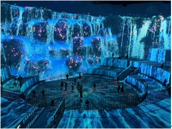
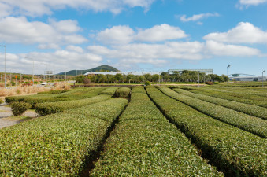
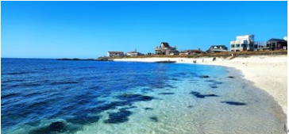

노형수퍼마켓
노형수퍼마켙은 약 4000㎡(1200여 평)의 면적과 최대 높이 20m(6층 건물 높이)의 웅장하고 압도적인 규모의 미디어아트 테마파크이다.
위치 : 제주 제주시 노형로 89

오설록 티 뮤지엄
국내외 차 관련 물품과 박물관이며, 푸른 녹차밭이 펼쳐지는 제주도 서광다원 입구에 위치하고 있다. 동서양 전통과 현대가 조화를 이룬 문화의 공간이자, 자연 친화적인 휴식공간으로, 건물 전체가 녹차잔을 형상화하여 만들어졌다. 녹차와 한국 전통 차 문화를 이해할 수 있는 학습 공간으로 설록차의 모든 것을 체험해 볼 수 있는 곳이다.
위치 : 제주 서귀포시 안덕면 신화역사로 15 오설록

우도
우도는 소가 누워있는 모양을 닮았다고 해서 일찍부터 소섬 또는 쉐섬으로 불리웠다. 완만한 경사와 옥토, 풍부한 어장, 우도팔경 등 천혜의 자연조건을 갖춘 관광지로써 한해 약 200만 명의 관광객이 찾는 제주의 대표적인 부속섬이다.
위치 : 제주 제주시 우도면